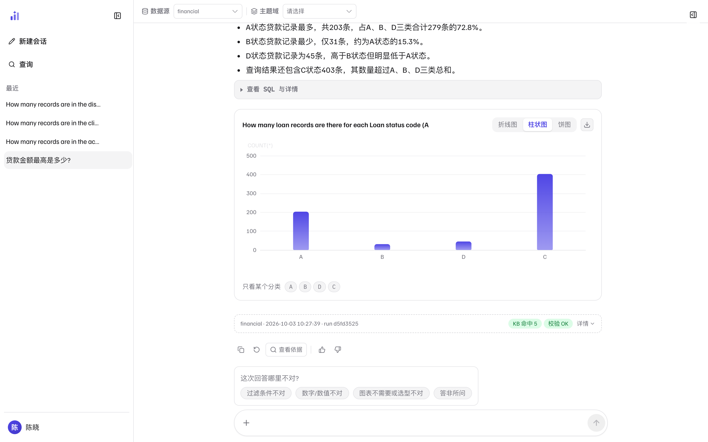

反馈与知识沉淀
每一条好评和差评都走同一条通道，但去向不同：好评计入统计与运行评分， 差评连同你选的理由落为待确认草案，由管理员审批后成为数据源的知识。 这一页讲怎么反馈、提交后发生了什么，以及答案不对时的补救路径。
为什么要反馈
这不是一个「点完赞就结束」的评分按钮。Trove 的数据源知识库（KB）是一份由人审批、随使用增长 的资产：模型答得好的问法被沉淀成示例与模板，答得不好的地方连同原因进入待审批队列—— 修正的是知识库，不是这一次回答。于是同一个数据源会越用越准； 下一个同事问到同一类问题时，直接受益于你这次的三十秒。
评分行：五个按钮怎么用
每条答案下方是一排操作按钮。左边三枚是工具（复制 / 重新生成 / 查看依据）， 右边两枚才是评分——点赞直接提交，点踩会先问你「哪里不对」。

1 2 3- 1操作行——复制答案、重新生成（把这一轮重跑一遍，仅最后一轮可见）、查看依据（等同依据抽屉入口）。
- 2点赞 / 点踩——点赞立即提交；点踩不会直接提交，而是先展开下一步的理由标签。
- 3理由标签（四选一，必选）——过滤条件不对 / 数字·数值不对 / 图表不需要或选型不对 / 答非所问。选中的理由会随差评一起提交，成为管理员判断「该修什么」的第一线索；这一步不给你「只踩不说」的选项，因为无理由的差评对知识库没有增量。
另外，依据抽屉底部也有一个反馈入口，走的是同一评分通道—— 核查 SQL 时发现问题，可以就地反馈，不用退回聊天区。
提交之后：回执说了什么，就只承诺什么
提交后按钮旁出现一行回执，把真实去向原样报给你：
- 点赞回执：「已记录好评：计入好评统计与运行评分；是否沉淀为知识由管理员确认。」
- 点踩回执：「已提交：落为待确认草案（待管理员确认），并回写运行评分。」
三件事值得注意：
- 好评不会直接变成知识——它先累加统计与运行评分，是否把这条问答沉淀成知识库资产，仍由管理员确认。
- 差评先落为「待确认草案」——进入管理台知识库的待审批队列（见知识库运营 · 待审批），确认后才会参与后续检索。同一问题被反复纠正会累积证据、加快处置，但每条草案都保留来源，可查、可退。
- 提交失败会如实说失败——不会给你一张「已提交」的假回执。
知识库直接决定后续所有答案的口径。如果反馈能自动入库，一次误操作就能污染整个数据源的检索。 所以自动写回的通道设计为只落草案、不直接生效； 管理员的确认按钮才是知识的入库口（这条规则在管理指南里同样适用： 知识库运营、方法论技能的草稿都不例外）。
答案不对时，除了点踩还能做什么
-
1
先追问澄清
多数「不对」其实是口径分歧——在会话里直接追问「按发放日期口径呢?」， 比重新开一轮快，上下文也都在。
-
2
换个问法重新问
问题本身有歧义时，用提问气泡旁悬浮出现的铅笔按钮编辑并重发， 或者到新会话里换一种问法。反复纠正的痕迹会被系统看作「这个问题容易被误解」的证据。
-
3
运行失败时用错误卡片
查询中断会显示一张错误卡片：能重试的给重试， 问题问得不好给换个问法（直接进入编辑状态）； 管理员还多一个去管理台入口，以及默认折叠的技术细节 （出错节点、错误类别、原文——反馈故障时把这行复制给管理员最快）。
相关页面
本页截图为真实界面（隔离的演示实例，数据是内置 BIRD 金融演示库）；
可用前端仓库里的 npm run shots 重新生成，_manifest.json 记录每张图的来源提交。